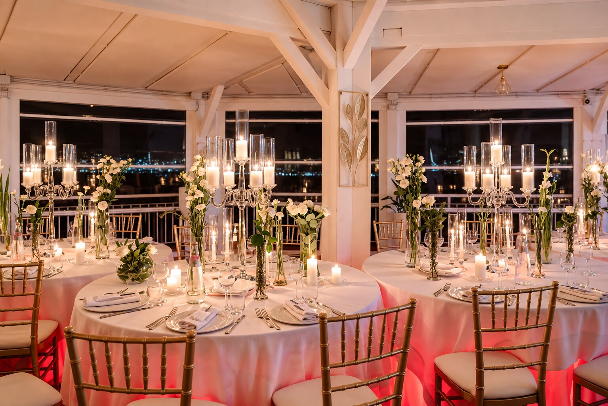

Wedding
Matrimoni & Eventi
Ogni momento speciale merita di essere raccontato attraverso i fiori. Floris Home realizza creazioni floreali personalizzate per matrimoni, cerimonie ed eventi, studiando colori, fiori e dettagli in armonia con lo stile e l'atmosfera desiderata.